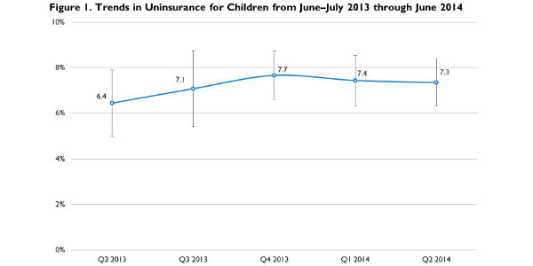

|  |
|
||
A First Look at Children's Health Insurance Coverage under the ACA in 2014
Genevieve M. Kenney, Joan Alker, Nathaniel Anderson, Stacey McMorrow, Sharon K. Long, Douglas Wissoker, Lisa Clemans-Cope, Lisa Dubay, Michael Karpman, and Tricia BrooksSeptember 9, 2014
The Urban Institute’s Health Reform Monitoring Survey (HRMS) has been tracking health insurance coverage among nonelderly adults since the first quarter of 2013.1 The HRMS, which was designed to provide early feedback on implementation of the Affordable Care Act (ACA), found that uninsured rates had declined by 4.0 percentage points among nonelderly adults between September 2013 (just before the first open enrollment period began) and June 2014, with larger declines found in states that have expanded Medicaid (Long, Kenney, Zuckerman, Wissoker, et al. 2014). Beginning in June 2013, the HRMS added a supplement to track changes in coverage and other outcomes for children under the ACA. This brief examines findings from the HRMS children’s supplement.
In contrast to adults, uninsured rates for children had been declining in the decade before the ACA’s passage (Kenney, McMorrow, et al. 2012). By 2012, just 7 percent of children lacked health insurance coverage.2 This is largely because of the expansion of public coverage, which is substantially more generous for children than for adults. More than half of all states offer coverage through Medicaid or the Children’s Health Insurance Program (CHIP) to children in families with incomes that are 250 percent of the federal poverty level (FPL) or above (Heberlein et al. 2013). In addition, children’s participation in Medicaid/CHIP is higher than adults’ participation in Medicaid, and children’s participation has been rising following the passage of the CHIP Reauthorization Act in 2009, reaching 88.1 percent in 2012.3 Under current law, with the exception of immigrant subgroups, just over half the states have a Medicaid and CHIP eligibility threshold for children of 250 percent of FPL or higher; just five states (AK, AZ, ID, ND, OK) have thresholds below 200 percent of FPL, and 19 have thresholds above 300 percent of FPL.
The major ACA coverage provisions, including the state option to expand Medicaid to nearly all adults with family incomes at or below 138 percent of FPL4 and the provision of federal subsidies to purchase coverage in the new health insurance Marketplaces, were primarily designed to reduce uninsurance among adults. To date, eligibility for Marketplace subsidies has had a small effect on children (only 6 percent of enrollees in Marketplace plans are under 18), but several other components of the ACA also have the potential to affect children’s coverage (Assistant Secretary for Planning and Evaluation 2014). These include the individual requirement to obtain coverage (i.e., the individual mandate) and the “welcome mat” or “woodwork” effects of other ACA provisions on children’s participation in Medicaid and CHIP. In particular, the expansion of coverage to parents—especially in those states that have opted to expand Medicaid coverage under the ACA—is expected to improve the participation rate of their children.5 New outreach and enrollment investments under the ACA may also increase participation, and the required movement of approximately 28 percent of CHIP children with incomes between 100 and 138 percent of FPL into Medicaid6 (i.e., “stairstep kids”) will eliminate premiums facing some families, which could further increase participation in public coverage among children (Prater and Alker 2013).
Simultaneously, there have been considerable challenges in the past year affecting enrollment and potentially retention in Medicaid and CHIP; these could limit any possible coverage improvements for children observed for children by June 2014. These challenges are related to the change to modified adjusted gross income as the basis for Medicaid eligibility and disconnects between existing Medicaid and CHIP programs and new federal or state Marketplaces.7 Overall, given the potential benefits of the ACA, experts project increases in coverage among children under the ACA over the long term, particularly if the current structure of public coverage is maintained for children (Kenney et al. 2011).
Though several tracking surveys,8 including the HRMS, have shown declines in the uninsured rate among nonelderly adults since late 2013, no published report has yet examined how coverage has changed for children over this period (Collins, Rasmussen, and Doty 2014; Carman and Eibner 2014). We use the HRMS child supplements from June 2013 through June 2014 (HRMS-Kids) to examine changes in health insurance coverage for children. We also use data from the March and June 2014 HRMS-Kids to examine the income distribution of uninsured children and assess how their access to care and preventive care receipt compares to that of insured children.
What We Did
Our analysis compares the uninsured rate for children (from birth to age 17) through quarter 2 of 2014 (survey fielded in early June 2014) to rates estimated in previous quarters with data collected beginning in June 2013. The core HRMS targets nonelderly adults; if a respondent to the core survey reports that there are any children in the household, a sample child is selected and the respondent—the child’s parent in the majority of cases—is asked to provide information about the health and healthcare of the child.9 Though we include information for all three quarters of 2013 for which we collected information on children, we focus on changes between quarter 3 of the 2013 HRMS-Kids, fielded in September 2013 (just before the first Marketplace open enrollment period was initiated), and quarter 2 of the 2014 HRMS-Kids, fielded in June 2014 (the most recent estimates available).10
Though each round of the HRMS-Kids is weighted to be nationally representative, it is important in examining changes over time that we base our estimates on comparable samples over time. This is a particular challenge in comparing estimates from survey samples over time because the composition of the sample that is surveyed can change across rounds in ways that are not fully captured in the weights and that may distort the estimates of change. To control for the potential influence of changes in the HRMS-Kids sample characteristics, we estimate weighted regression models that control for demographic and socioeconomic characteristics, internet access, and geography.12 Controlling for differences in respondents’ characteristics through time allows us to remove any variation in insurance coverage caused by changes in the types of people responding to the survey (rather than by changes in the health insurance landscape). In presenting the regression-adjusted estimates, we use the predicted rate of uninsurance in each quarter for the same nationally representative population. For this analysis, we base the nationally representative sample on survey respondents from the most recent 12-month period from the HRMS-Kids (i.e., quarters 3 and 4 of 2013 and quarters 1 and 2 of 2014). The basic patterns shown for the regression-adjusted uninsured rates for children are similar to those based solely on simple weighted (unadjusted) estimates. In presenting our findings on coverage changes, we focus on statistically significant changes in insurance coverage over time (defined as differences that are significantly different from zero at the 5 percent level or lower) relative to September 2013, just before the open enrollment period for the Marketplaces began.
The HRMS child supplement has a sample of between 2,363 and 2,777 children each quarter, substantially smaller than the 7,500 adults interviewed each quarter. Consequently, the estimated uninsured rate for children is relatively imprecise, especially relative to the low uninsured rate for children at baseline: the minimum difference between quarters in the uninsured rate for children that we can detect with a high degree of confidence is 3.2 percentage points, which would represent a change of roughly 44.9 percent. (For nonelderly adults in the HRMS, the minimum detectable difference is 2.1 percentage points, which is smaller in absolute terms and, at 10.0 percent, constitutes a much smaller share of the higher adult uninsured rate.) Because of the imprecision of our estimates of change for children, we present the 95 percent confidence interval around each quarterly estimate of the uninsured rate. The imprecision of the quarterly uninsured estimates for children combined with the early stages of ACA implementation and the small projected changes in children’s coverage make it unlikely that we will detect statistically significant changes as of June 2014.
We use the HRMS-Kids sample from the first two survey rounds in 2014 to provide a current snapshot of the income distribution for uninsured children, pooling together the two quarters of data to achieve more precision (the combined sample of uninsured children from the two rounds is 312). We also assess access and affordability of care for insured and uninsured children using the pooled March/June 2014 data. Specifically, we look at difficulty paying any of a child’s medical bills in the past year; confidence in meeting a child’s needs; receipt of a routine checkup in the past year; whether the child had an unmet need (because of affordability) for prescription drugs, medical care, a general doctor, a specialist, medical tests, treatment, or follow-up care, dental care, mental health care or counseling, or eyeglasses or vision care; and whether the child had one or more usual sources of care. For these comparisons, our regression-adjusted differences control for many child and family characteristics.13 The adjusted differences were designed to make uninsured children more comparable to the insured children in terms of their observed health, demographic, and socioeconomic characteristics. However, these differences cannot be interpreted as causal, because we are not addressing unobserved differences between insured and uninsured children that could also affect these outcomes.
What We Found
No statistically significant change was found at the national level in the estimated uninsured rate for children age 17 and under between September 2013 and June 2014; the uninsured rate for children remained at very low levels but did not decline further. In June 2014, the uninsured rate for children was estimated to be 7.3 percent (95% CI [6.3, 8.4]) for the nation (figure 1). No statistically significant change was found between the estimated uninsured rate for children in any of the final three quarters of 2013 and June 2014 (data not shown). When we tested the uninsured rate for children in the pooled March/June 2014 HRMS-Kids samples against the rate found from pooling different combinations of the quarterly 2013 HRMS-Kid samples, we found no statistically significant changes in the uninsured rate for children for these comparisons either. As indicated above, the lack of a statistically significant change in the uninsured rate for children over this time frame is not unexpected given both the size of the quarterly HRMS child sample and the small changes that are anticipated under the ACA in coverage for children compared to adults, which reflects the low baseline uninsured rates for children. In contrast, for parents, where the sample size and minimum detectable difference are nearly identical to those for children on the HRMS, we found a statistically significant decrease of 2.4 percentage points between September 2013 and June 2014 in the uninsured rate for parents (Kenney, Anderson, et al. 2014).
The majority of uninsured children appear to be eligible for Medicaid or CHIP but are not yet enrolled. Over half (55.8 percent (95% CI [42.8, 68.9])) of uninsured children sampled in March/June of 2014 are in families that have incomes at or below 138 percent of FPL, and another 25.2 percent (95% CI [16.5, 33.8]) have incomes between 138 and 250 percent of FPL; an estimated 19 percent (95% CI [12.3, 25.6]) have incomes at or above 250 percent of FPL (figure 2). Under current law, with the exception of a subset of immigrant children, uninsured children with family incomes at or below 138 percent of FPL are eligible for public coverage through Medicaid; likewise, many uninsured children with family incomes between 138 and 250 percent of FPL are eligible for public coverage through Medicaid or CHIP. For some uninsured children with family incomes at or above 250 percent of FPL, Medicaid or CHIP coverage may be available if they live in one of the 29 states (plus DC) that cover children in this income band; alternatively, they may be eligible for subsidized coverage through the new Marketplaces, provided their families do not have access to affordable employer sponsored coverage for the employee as defined under the ACA.13
Uninsured children are more likely than insured children to experience access and affordability problems and less likely to receive preventive care.Relative to insured children, uninsured children are much more likely to have had a need for health care in the previous year that was unmet because of affordability concerns and to have parents who say they have difficulty paying the child’s medical bills. Uninsured children are also much less likely to have a usual source for health care and to have received a routine checkup in the previous year, and more likely to have parents who say they lacked confidence that they can meet their child’s health care needs (figure 3). For example, parents of uninsured children were 7.9 percentage points (95% CI [3.1, 12.6]) more likely than parents with insured children to report any difficulty paying their child’s medical bills in the past year (18.4 percent, 95% CI [14.1, 22.7] compared with 10.6 percent, 95% CI [9.6, 11.5]). Additionally, uninsured children were 26.6 percentage points (95% CI [21.6, 31.6]) less likely to have had a routine checkup in the past year (58.1 percent (95% CI [53.1, 63.2]) compared with 84.7 percent (95% CI [83.4, 86.0])).14
What It Means
Estimates derived from HRMS-Kids suggest that uninsured rates for children had not changed by June 2014, following the first open enrollment period that began on October 1, 2013. Though ultimately the ACA could further reduce uninsured rates among children from their current low levels, at this early point following the initial open enrollment period, we are not detecting any statistically significant change in the uninsured rate for children since September 2013. A definitive assessment of the magnitude of the changes in coverage occurring for children nationally and by state and population subgroups will require data from federal surveys, with their stronger designs, larger sample sizes and much higher response rates. In addition, deriving causal estimates of the effects of the ACA on health insurance coverage for children will ultimately require accounting for changes in health insurance coverage that would have occurred independent of the ACA and for ACA-related policies implemented prior to 2014 that could have affected coverage for children, such as the maintenance of eligibility provision which required that states maintain their 2010 Medicaid and CHIP eligibility levels for children and the additional federal funding allocated for CHIP through fiscal year 2015.
Though these data suggest that the ACA did not reduce the number of uninsured children between September 2013 and June 2014, there are reasons to expect that children’s coverage will grow in future years, assuming that current levels of Medicaid and CHIP eligibility are maintained. The significant technological challenges associated with establishing federal and state Marketplace portals and the delays in transferring eligibility data between agencies are expected to improve as states continue to work through significant backlogs in processing applications. These Marketplace portals are an important avenue through which many families are applying for Medicaid, CHIP, and Marketplace coverage.
Many other factors may also affect the uninsured rate for children going forward. Further take-up of the Medicaid expansion for adults under the ACA could have a positive effect on children’s coverage given that four of the six states with the largest number of uninsured children (FL, GA, NC, and TX) and six of the eight states with uninsured rates for children of more than 10 percent have yet to extend Medicaid to low-income parents (Mancini and Alker 2013). Between September 2013 and June 2014, the uninsured rate had declined by 2.4 percentage points for parents for the nation as a whole and by 5.0 percentage points for parents living in states that expanded Medicaid under the ACA (Kenney, Anderson, et al. 2014).
The extent of federal funding for CHIP beyond fiscal year 2015, which will be determined in the coming year, will also likely affect uninsurance among children. Some children losing CHIP coverage would qualify for subsidized coverage through the Marketplace, but others would be blocked from receiving financial assistance for Marketplace coverage if they have access to affordable employer-based coverage (Kenney et al. 2011). Currently, affordable employer-based coverage—for both individuals and families—is based on the cost of individual coverage, and does not consider the often significantly higher costs of a family plan. Recent estimates suggest that as many as half of children with Medicaid or CHIP coverage and incomes above 138 percent of FPL may not qualify for Marketplace subsidies based on their access to employer-based coverage (McMorrow et al 2014).
The strong support for insuring America’s children exhibited at both the federal and state level before the ACA’s enactment contributed to a steady decline in the uninsured rate for children. As states achieve high-functioning, data-driven eligibility and enrollment systems under the ACA, enrollment and retention of eligible children in Medicaid and CHIP should continue to improve. Though the prospects are good for achieving further improvements in coverage for children in the coming years, preserving and building on the existing coverage gains for children will require that affordable coverage options remain available for children.
References
Assistant Secretary for Planning and Evaluation. 2014. Addendum to the Health Insurance Marketplace Summary Enrollment Report for the Initial Annual Open Enrollment Period. Washington, DC: US Department of Health and Human Services.
Blewett L. “Medicaid Expansion: Out of the Woodwork or onto the Welcome Mat?” State Health Access Data Assistance Center Blog, October 12, 2012. Available at: http://www.shadac.org/blog/medicaid-expansion-out-woodwork-or-welcome-mat/.
Carman, Katherine Grace, and Christine Eibner. 2014. Changes in Health Insurance Enrollment since 2013: Evidence from the RAND Health Reform Opinion Study. Santa Monica, CA: RAND.
Centers for Medicare and Medicaid Services. 2014. June 2014 Monthly Applications, Eligibility Determinations and Enrollment Report. Baltimore: US Department of Health and Human Services.
Collins, Sara R., Petra W. Rasmussen, and Michelle M. Doty. 2014. Gaining Ground: Americans' Health Insurance Coverage and Access to Care After the Affordable Care Act's First Open Enrollment Period. New York: The Commonwealth Fund.
Heberlein, Martha, Tricia Brooks, Samantha Artiga, and Jessica Stephens. 2013. Getting into Gear for 2014: Shifting New Medicaid Eligibility and Enrollment Policies into Drive. Oakland, CA: Kaiser Family Foundation.
Kenney, Genevieve M, Nathaniel Anderson, Sharon K. Long, Lisa Clemans-Cope, Lisa Dubay, Stacey McMorrow, Michael Karpman, and Douglas Wissoker. 2014. Taking Stock: Health Insurance Coverage for Parents under the ACA in 2014. Washington, DC: The Urban Institute.
Kenney, Genevieve M., Victoria Lynch, Michael Huntress, Jennifer Haley, and Nathaniel Anderson. 2012. Medicaid/CHIP Participation among Children and Parents. Washington DC: Urban Institute.
Kenney, Genevieve M., Stacey McMorrow, Stephen Zuckerman, and Dana E. Goin. 2012. “A Decade of Access Declines for Adults Holds Implications for Changes in the Affordable Care Act.” Health Affairs 31 (5): 899–908.
Kenney, Genevieve M., Matthew Buettgens, Jocelyn Guyer, and Martha Heberlein. 2011. “Improving Coverage for Children under Health Reform Will Require Maintaining Current Eligibility Standards for Medicaid and CHIP.” Health Affairs 30 (12): 2371–81.
Long, Sharon K., Genevieve M. Kenney, Stephen Zuckerman, Dana E. Goin, Douglas Wissoker, Frederic Blavin, Linda J. Blumberg, Lisa Clemans-Cope, John Holahan, and Katherine Hempstead. 2014. “The Health Reform Monitoring Survey: Addressing Data Gaps to Provide Timely Insights into the Affordable Care Act.” Health Affairs 33 (1): 161–67.
Long, Sharon K., Genevieve M. Kenney, Stephen Zuckerman, Douglas Wissoker, Adele Shartzer, Michael Karpman, Nathaniel Anderson, and Katherine Hempstead. 2014. Taking Stock at Mid-Year: Health Insurance Coverage under the ACA as of June 2014. Washington DC: Urban Institute.
Mancini, Tara, and Joan Alker. 2013. Children’s Health Coverage on the Eve of the Affordable Care Act. Washington DC: Georgetown University Center for Children and Families.
McMorrow, Stacey, Genevieve M. Kenney, Nathaniel Anderson, Lisa Clemans-Cope, Lisa Dubay, Sharon K. Long, and Douglas A. Wissoker. 2014. “Trade-Offs between Public and Private Coverage for Low-Income Children Have Implications for Future Policy Debates.” Health Affairs 33 (8): 1367–74.
Prater, Wesley, and Joan Alker. 2013. Aligning Eligibility for Children: Moving the Stairstep Kids to Medicaid. Oakland, CA: Kaiser Family Foundation.
About the Series
This brief is part of a series drawing on the Health Reform Monitoring Survey (HRMS), a quarterly survey of the nonelderly population that is exploring the value of cutting-edge Internet-based survey methods to monitor the Affordable Care Act (ACA) before data from federal government surveys are available. The Health Reform Monitoring Survey (HRMS) is supported by multiple foundations and the Urban Institute. The Robert Wood Johnson Foundation and the Ford Foundation provide funding for the core survey and the topical modules. The Child Supplement was conducted in partnership with the Center for Children and Families at Georgetown University and funded by Atlantic Philanthropies, the David and Lucile Packard Foundation, and an anonymous donor. For more information on the HRMS and for other briefs in this series, visit www.urban.org/hrms.
About the Authors
Genevieve M. Kenney is a senior fellow and codirector, Nathaniel Anderson is a research assistant, Stacey McMorrow is a senior research associate, Sharon K. Long is a senior fellow, Lisa Clemans-Cope is a senior research associate, Lisa Dubay is a senior fellow, and Michael Karpman is a research associate with Urban Institute’s Health Policy Center. Douglas Wissoker is a senior fellow with Urban Institute. Joan Alker is the executive director and Tricia Brooks is a senior fellow at the Georgetown University Center for Children and Families.
Notes 1The HRMS is a quarterly survey drawn from KnowledgePanel, a probability-based Internet panel maintained by GfK Custom Research and based on a representative sample of US households. The core HRMS targets nonelderly adults because the ACA coverage expansions primarily affect this population. Because children may also experience significant effects of the ACA, HRMS-Kids was added to the core survey in summer 2013. If a respondent to the core survey reports that there are any children in the household, a sample child is selected and the respondent—a child’s parent, in the vast majority of cases—is asked to provide information about that child’s health and health care experiences. This brief presents estimates based on data collected in June, September, and December 2013 as well as March and June 2014. For more information on the HRMS-Kids, see McMorrow et al. (2014). We benchmarked the HRMS (both adult and child samples) to existing federal surveys (the American Community Survey and the National Health Interview Survey) for overall characteristics, the coverage distribution, and access and affordability of care. HRMS estimates of the uninsurance rates for all children and different age and racial or ethnic subgroups were very similar to those from the American Community Survey. Rates of health care use on the HRMS-Kids are comparable to those on the National Health Interview Survey, with just over 80 percent of children on each survey reporting a routine checkup in the past 12 months. However, compared to the National Health Interview Survey, the HRMS finds higher reported access problems for both children and adults.
|
|||

 |
 |
 |